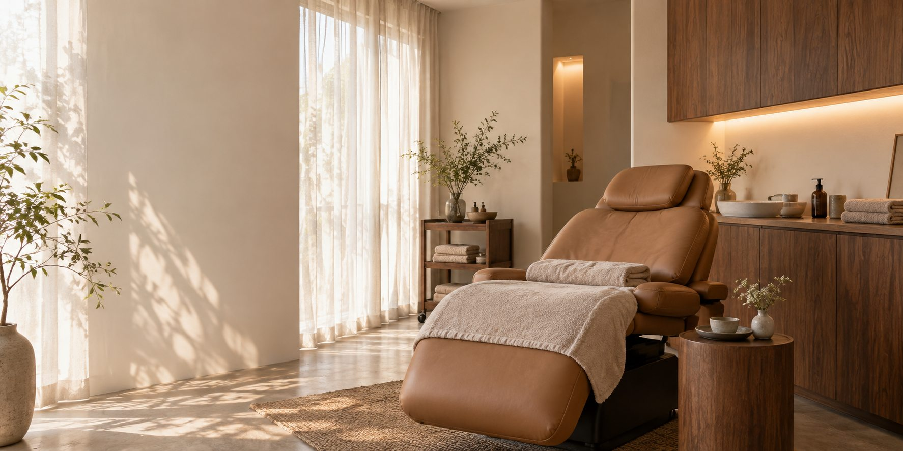

はじめての方へ
何を選べばいいか、
迷っていても。
このデモでは、サービスを選んでから相談する方法と、決めずに相談する方法の両方を体験できます。
実際の施術内容・料金・所要時間は、店舗の正式な情報に差し替えます。未確認の効果や口コミは掲載していません。
支給デザインを実装する前の、スマートフォン導線の検討サンプルです。
来店までの流れ
予約前に、確かめておきたいこと。
01
ケアを知る
メニューの内容、料金、必要な時間を先に確認します。
02
相談内容を選ぶ
気になる内容を選び、相談前の確認画面へ進みます。
03
予約先へ進む
本番では店舗の既存予約先へ接続。このデモは確認までです。
店舗を探して来た方へ
場所と営業情報を、
一か所に。
Google Mapsから訪れた方が、営業時間、アクセス、予約先を続けて確認できる配置です。
住所・駅・営業時間・電話番号は、正式情報の支給後に掲載します。実在の場所を示すものではありません。
地図の掲載予定エリア
架空店舗のため地図は未接続
架空店舗のため地図は未接続
よくあるご質問
相談する前に。
メニューを決めずに相談できますか？
デモでは「メニューを相談したい」を選んで進めます。実際の受付方法は店舗の運用に合わせます。
この画面から予約できますか？
予約はできません。個人情報を入力せず、選択内容の確認だけを体験できます。
料金はどこで確認しますか？
本番では各メニューページへ正式料金を掲載します。ここでは架空の価格を作らず、掲載位置だけ示しています。
相談導線の体験
相談したい内容を選ぶ。
入力内容は外部へ送信しません。お名前・連絡先の入力も不要です。
ここが本番の予約先へ進む位置です。送信・予約は行っていません。